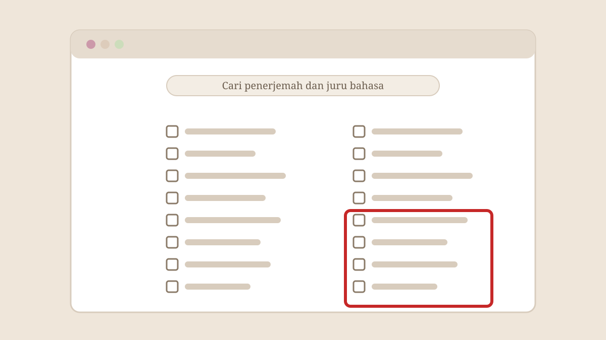

Kategori Audiovisual & Aksesibilitas Kini Ada di Sihapei
Usulan saya bersama Iman Yowidiyanto diterima oleh HPI. Direktori Sihapei kini mempunyai empat spesialisasi baru untuk penerjemahan audiovisual dan aksesibilitas media.
Baca selengkapnya: Kategori Audiovisual & Aksesibilitas Kini Ada di Sihapei →